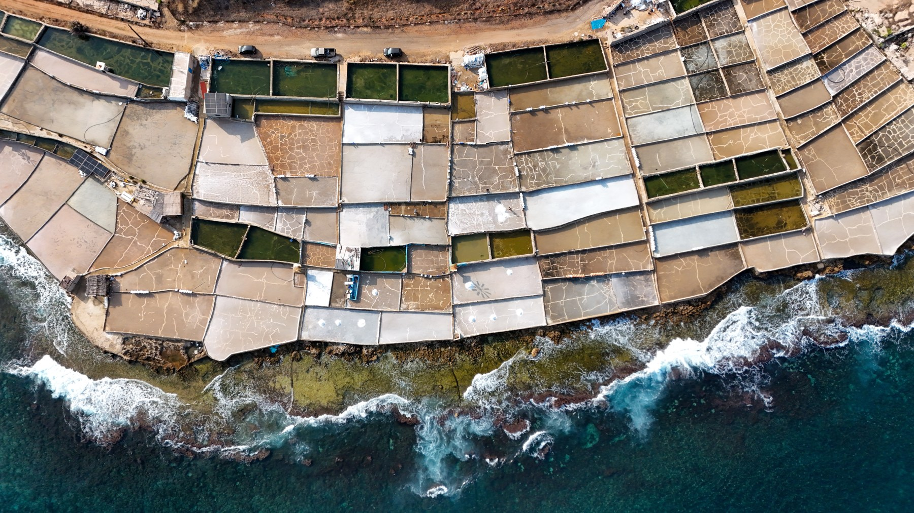
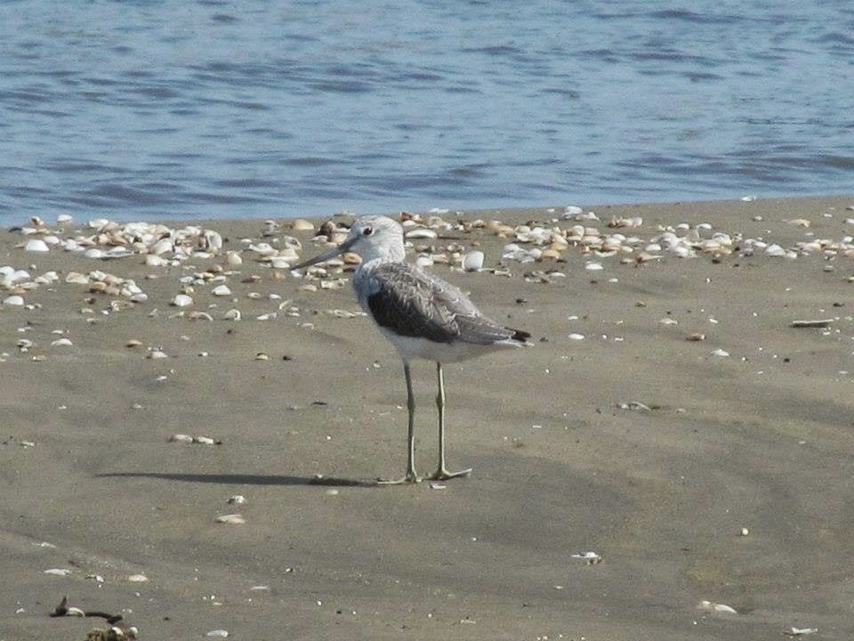
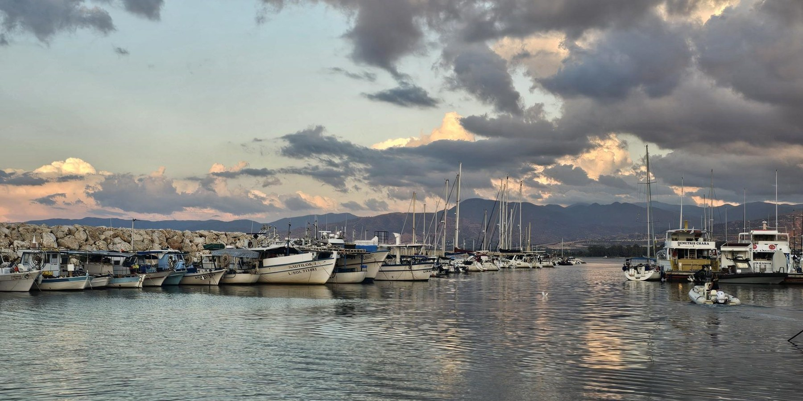

Amira Rajab / dpa
The Lebanon–Cyprus–Egypt triangle: estuaries, salt pans, lakes and harbours in the protection of bird habitats.
In 2026, reports on managing Lebanon’s Damour basin, a new study of Egypt’s Lake Manzala and the debate over expanding Latchi harbour in Cyprus reopen one question: where do birds rest when the coast changes? At the water’s edge, they need an estuary that still receives river water, a shallow bank rich in food, sheltering reeds or a quiet rock after diving. These features make a place valuable as habitat and deserve a place in development plans from the outset.
Lebanon | From the Damour estuary to Anfeh’s salt pans

EPA / The National
In 2026, the integrated management plan for Damour brings the relationship between river and coast back into focus. Reports reveal the pressures on the area: around 200.7 hectares of agricultural land were converted to built-up uses between 2014 and 2024 within the basin study area, alongside water abstraction, pollution and construction along riverbanks.
These pressures are particularly important at the estuary and its surroundings, where freshwater meets the sea and the river connects with farmland and coastal vegetation. This area provides habitat for migratory birds in Lebanon. Surveys of the lower Damour have recorded migratory and resident species, including White Pelican and Common Crane. Protecting the estuary therefore means preserving a space used by birds and its connections with water and surrounding vegetation.
Recent reports identify the flow of water reaching the estuary as a management priority, alongside restoring riverbanks and regulating land use. Protecting the coast is tied to what happens upstream: abstraction, pollution and encroachment have consequences along the river all the way to the sea.
On the northern coast, Anfeh’s salt pans reveal another aspect of this relationship. Between sea and rock lie shallow basins created by the craft of salt harvesting, bringing together work, heritage and nature. Sources document their role as resting and feeding sites for migratory birds, while some abandoned pools have become refuges. Areas that may appear unused thus retain a living function along birds’ journeys.
The salt pans face pressure from changes in coastal land use and tourism development, making their protection about more than preserving a traditional occupation. Safeguarding the basins, their connection to the sea and their open character can allow salt production to continue while retaining feeding and resting sites for birds.
On Batroun’s beach, the famous ‘Bajou3a’ gives the relationship between birds and the coast a familiar face. Her image beside the sea brings the question closer to people: where do birds find rest and food, and how can we preserve these spaces as the shoreline changes?
Egypt | Manzala: more open water… different habitats

اليوم السابع
A scientific study published in 2026 places Lake Manzala before a precise question: how does bird life change when open water expands at the expense of reeds and shallow margins?
The study compared twenty sites within Ashtoum El Gamil Protectorate, in the lake’s north-eastern area, before and after dredging and vegetation removal. It found declines in vegetation cover, bird diversity and abundance within the study area, with different responses among bird groups depending on the habitats they use.
A wader searches for food in shallow water and mud, while other birds benefit from open water. When water depth changes or vegetation disappears, the opportunities available to each group change too. A lake can therefore appear larger and more open while losing some of the habitats that give it its diversity.
The study recommends allowing reeds to recolonise and restoring shallow, muddy areas along the margins. These recommendations connect lake rehabilitation with birds’ needs: open water for diving and swimming, vegetation for shelter and nesting, and banks for feeding and resting.
This diversity is especially important at Ashtoum El Gamil, where the lake environment meets the Mediterranean. Differences in water, vegetation and margins create a series of habitats that birds use in different ways.
Successful rehabilitation is also measured by the diversity a place retains. Cleaning water and improving circulation can go hand in hand with protecting reeds, shallow areas and islands. When these elements remain, the lake can accommodate birds with varied needs and retain its role as a living coastal environment.
Cyprus | Latchi: the harbour on the birds’ map

BirdLife Cyprus
In October 2026, BirdLife Cyprus renewed the debate over the limits of development through the proposed expansion of Latchi harbour in the island’s north-west. The organisation said the proposal would increase recreational boat capacity from 200 to 384 in Chrysochous Bay, which is surrounded by protected areas and supports seabirds, turtles and the Mediterranean monk seal, alongside Posidonia seagrass meadows.
The new element in the debate is what birds’ movements reveal. According to the organisation, data from the Pandoteira project show regular use of the Akamas coast and the bay by the Mediterranean subspecies of European Shag, with young birds frequently visiting the harbour’s surroundings. A space for mooring and navigation on an engineering plan appears on a bird’s map as a place to feed and rest.
Tracking devices help explain this relationship: they reveal where birds travel after leaving their nests and which parts of the coast they use during the day. Shags nesting on rocks and coastal islets also need waters in which to find food and places to perch quietly after diving.
The organisation warns of increased noise, lighting, pollution and human presence as boat numbers rise, and calls for assessment of cumulative effects across the whole bay. Marine habitats are interconnected, and birds’ movements extend beyond the project boundaries drawn on paper.
The significance of the Cypriot case lies in bringing feeding and resting sites into the expansion decision and its conditions, and considering the harbour within its wider environment. Knowing where the nest is does not suffice; the protection map must accommodate the bird’s daily life.
What remains at the water’s edge?
From Damour and Anfeh to Manzala and Latchi, interventions and birds differ, but the question remains: what do we preserve for them when the coast changes? An estuary that receives water, quiet rocks, reeds and shallow banks deserve to appear in development plans alongside quays and roads. A coast that makes room for people’s lives can also leave birds a place to rest.